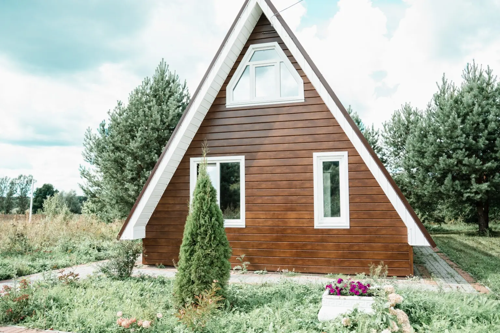
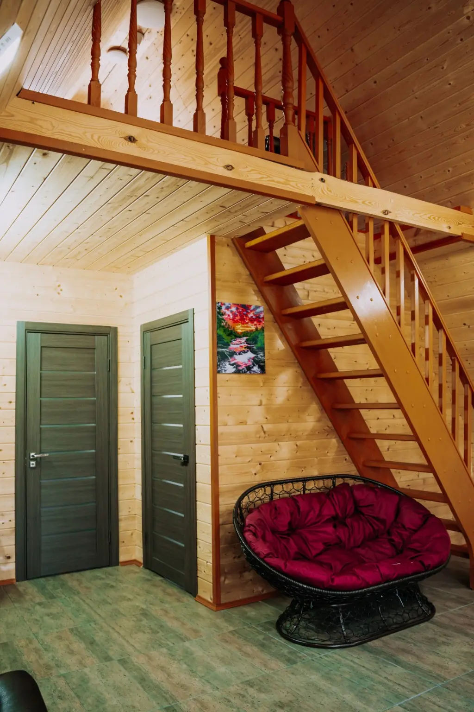
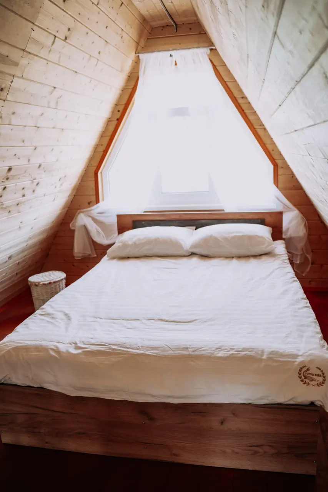
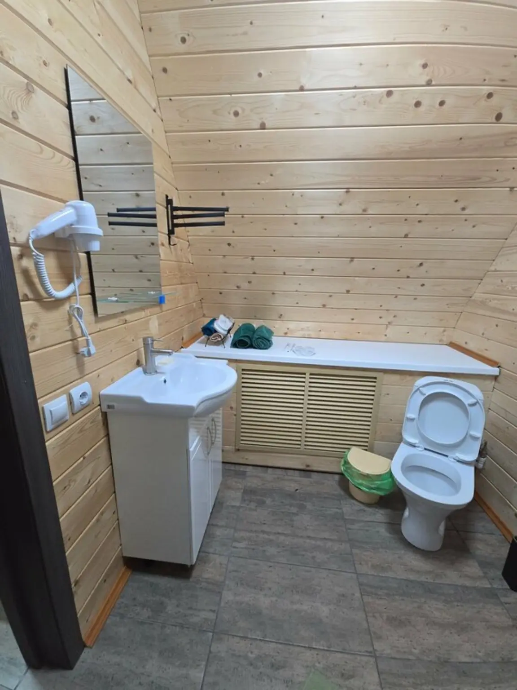
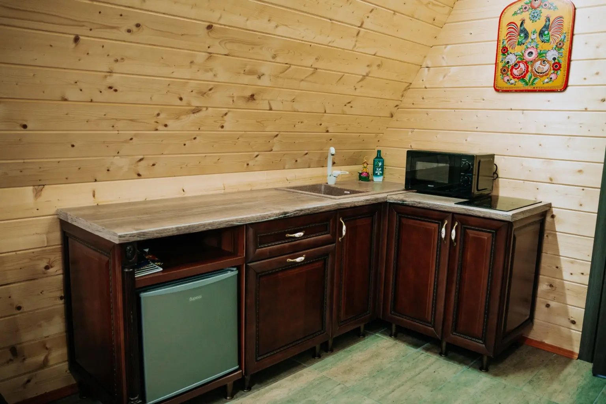
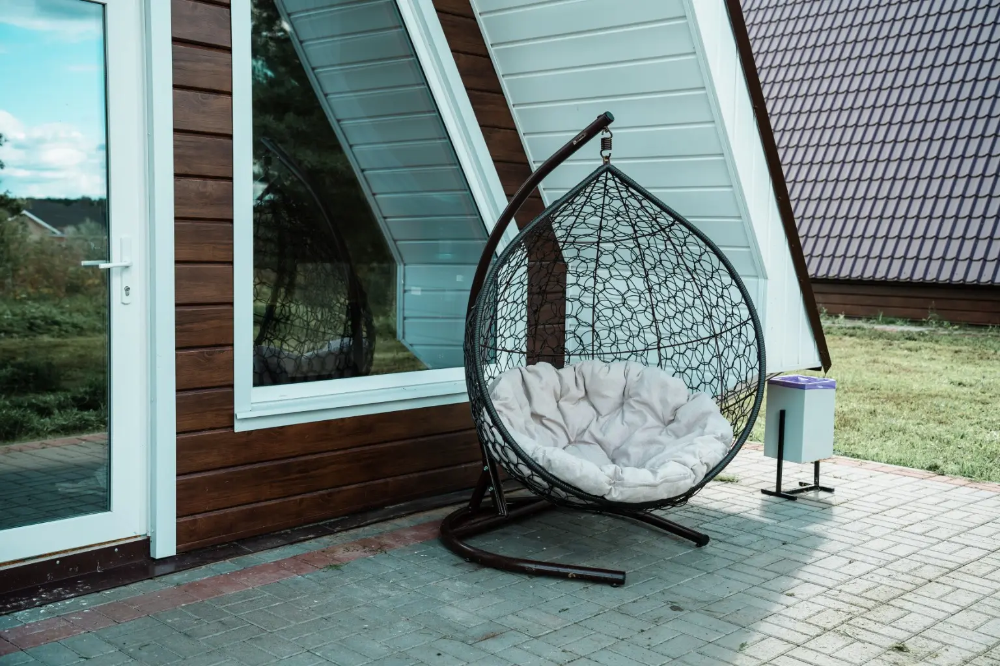
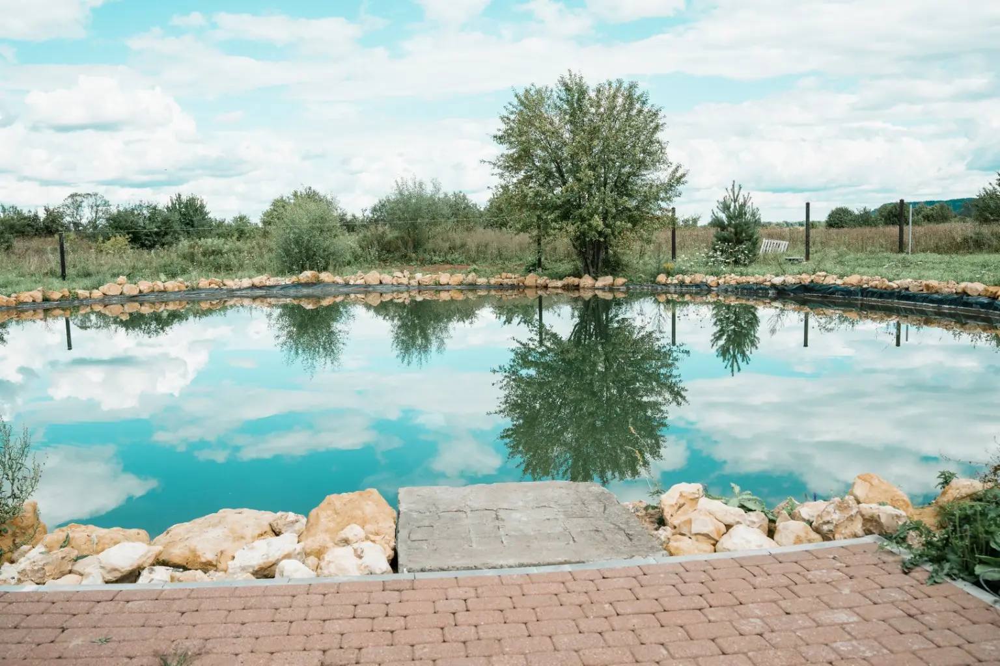
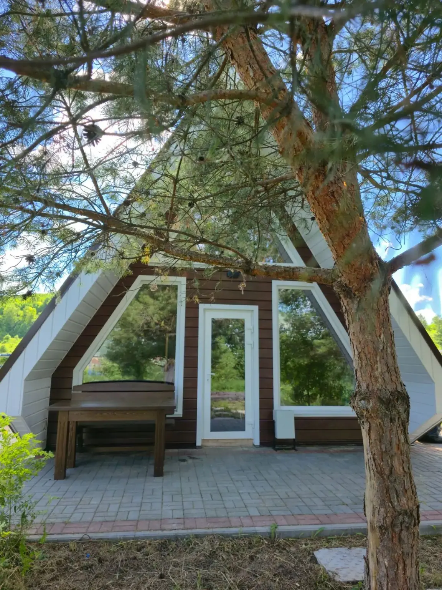

Домик 02 · ≈
Окский
Спокойствие и простор на берегу Оки.
О домике
Спокойный ритм рядом с Окой
Окский создан для отдыха вдвоём, семьёй или небольшой компанией. В «Окском» будет игровая приставка Xbox с подборкой игр для совместных вечеров — в том числе It Takes Two и Mortal Kombat.

Планировка
Удобно для компании до четырёх гостей
Две спальни расположены на первом и втором этажах. Кухня-гостиная объединяет зону отдыха, стол и место для приготовления еды.
- Гостей
- до 4
- Спальни
- 2
- Стоимость
- 10 000 ₽ / сутки
- Чан
- собственный
Оснащение
Всё необходимое внутри
- Душ и туалет
- Горячая вода
- Wi‑Fi
- Телевизор
- Холодильник
- Плита
- Микроволновка
- Посуда и приборы
- Игровая приставка Xbox — скоро
Фотографии
Окский внутри и снаружи






Бронирование
Выбрать Окский
Укажите даты — администратор проверит доступность и свяжется с вами.